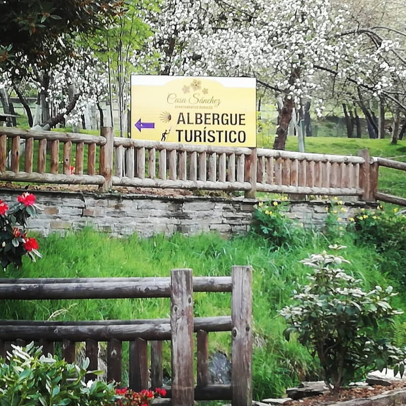
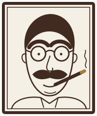

La iglesia de San Salvador a 55 m
Una iglesia del siglo XII surgida al paso del Camino. Con el tiempo se le añadió el pórtico «para dar cobijo a los peregrinos». Conserva la portada románica, con cuatro arquivoltas.

Albergue turístico · Camino Primitivo · Asturias
16 literas en 4 habitaciones · un apartamento para dos · Camino Primitivo
La casa
El albergue está en la calle El Salvador, en pleno centro de Grandas de Salime, detrás del parque. Abrió en 2016 en una vieja casa de piedra que antes era casa rural, y tiene jardín, terraza y un porche con hamaca.
«Lo mejor del albergue es Juan […] Hablé con él y es muy amable y honrado.»
| Plazas | 16 literas en 4 habitaciones, más un apartamento para 2 (18 plazas en total) |
|---|---|
| Habitaciones | 4, con taquillas individuales con llave. Cuántas literas hay en cada una: por confirmar |
| Baños | 3 duchas y 3 inodoros |
| Apartamento | Para dos personas |
| Precios | Litera desde 20 € la noche; apartamento, 90 € (por confirmar) |
| Temporada | Del 15 de abril al 3 de noviembre (por confirmar) |
| Entrada | Registro a partir de las 12:00. La credencial no es necesaria |
| Lo que hay | Cocina totalmente equipada, salón comedor, terraza, jardín, lavadora y secadora (4 € cada una), wifi gratuita, agua caliente, taquillas con llave, bicicletero cerrado, botiquín y enchufes para cargar |
| Lo que no hay | Calefacción, toallas ni jabón, desayuno ni comidas |
| La siguiente etapa | Grandas de Salime – A Fonsagrada, 25,5 km: Castro a 5,2 km y la entrada en Galicia a 13,3 km |
| Registro de turismo | No consta |
El jardín
Es lo que más repiten las reseñas: «un jardín espectacular», «un lugar idílico rodeado de vegetación». Hay césped con caminos de losa de pizarra, bancos de madera, tumbonas y la magnolia que florece junto a la terraza.
Según el Instagram del albergue y las reseñas: dos magnolias (una de flor crema y otra morada), cerezo y manzanos, rododendros, azaleas, camelias y hortensias. Y un regueiro, un canal de agua del jardín donde los peregrinos meten los pies.
Un albergue para descansar. Con un jardín espectacular! Todo para sentirte como en casa.Begoña · Gronze · octubre de 2022
Local com jardim maravilhoso com espreguiçadeiras. Cama confortável, bom atendimentoÁngel · Gronze · junio de 2025 · «jardín maravilloso con tumbonas»
Un lugar idílico rodeado de vegetación. Muy limpio.Un peregrino · Gronze · julio de 2022
Dentro
16 literas en 4 dormitorios, con taquillas individuales con llave. Hay 3 duchas, una cocina totalmente equipada, un salón comedor, la terraza, el jardín, una lavandería y un lugar cerrado para guardar las bicicletas.

Aparte de las literas, la casa tiene un apartamento de dos plazas. La noche: 90 € por confirmar
Un huésped contó en Google: la cocina estaba totalmente equipada, el apartamento amplio […] en el exterior hay terraza al aire libre
. Un huésped, en Google (vía Tripadvisor)
Litera desde 20 € la noche. Apartamento, 90 €. Abierto del 15 de abril al 3 de noviembre. Registro a partir de las 12:00. por confirmar
Precios: ficha de Alberguescaminosantiago, actualizada con datos de la propiedad el 19-10-2026. Temporada: según la misma ficha (19-10-2026); en 2022 y 2023 abrieron a primeros de mayo.
Fotos: la ficha del albergue en alberguescaminosantiago.com y su cuenta de Instagram (2017–2025).
La etapa
Desde Berducedo son 20,4 km: dos subidas moderadas, una larga bajada al embalse, la presa y, al final, la subida a Grandas por carretera y atajos. Gronze la resume así: «en 8,2 km pasamos de los 1.040 metros de altitud a los 210. Una bajada pirenaica».
La bajada al embalse, la presa y la subida a Grandas: el perfil completo, con los kilómetros y la altitud, se dibuja aquí con el scroll (hace falta JavaScript).
Has llegado. Entrada desde las 12:00.
El embalse y la presa
En su día fue «la mayor presa de España y la segunda de Europa». Bajo el embalse quedaron pueblos, puentes, iglesias y cementerios. La etapa la cruza por la carretera de la presa.
La central guarda arte de los Vaquero: el conjunto de 12 relieves de hormigón de Joaquín Vaquero Palacios y el mural de 60 × 5 m de su hijo, Joaquín Vaquero Turcios, en la sala de turbinas.
Fuentes: Wikipedia («Embalse de Salime») y el Ayuntamiento de Grandas de Salime.
El pueblo
Grandas de Salime tiene unos 383 habitantes en la villa, y casi todo lo que necesita un peregrino queda cerca del albergue. Distancias en línea recta desde el albergue, según OpenStreetMap.
Una iglesia del siglo XII surgida al paso del Camino. Con el tiempo se le añadió el pórtico «para dar cobijo a los peregrinos». Conserva la portada románica, con cuatro arquivoltas.
Fundado en 1984 con la colección de José María Naveiras, «Pepe el Ferreiro». Más de 3.000 m² en tres edificios, con molino, hórreo y panera, y la cocina de lareira, la escuela, la fragua y la barbería. Está en la Avenida de Ferreiro, 17.
Los miradores de la margen derecha (Mirador del Embalse, Boca de la Ballena y Mirador de Salime) y la central, con sus relieves y su mural. Más arriba.
| Punto | km desde Grandas |
|---|---|
| Castro, junto al castro y el museo del Chao Samartín | 5,2 |
| Penafonte (Peñafuente) | 9,8 |
| Entrada en Galicia, en el Alto del Acebo | 13,3 |
| A Fonsagrada | 25,5 |
Kilómetros sobre el trazado de OpenStreetMap. Gronze da 25,2 km y «la subida, larga, pero suave y progresiva, al Alto del Acebo».
Lo que dicen
Palabras de quienes han pasado por aquí, tal como las escribieron.
«Hay lugares donde uno duerme y luego están esos lugares donde el cuerpo realmente puede descansar. Casa Sánchez fue eso para nosotros.»
«Juan, Ricardo y Celia son unos magníficos anfitriones y mejores personas. El albergue es un remanso de paz para el camino. Imprescindible en Grandas.»
«[…] posiblemente las dos personas más amables y con mayor hospitalidad que he conocido a lo largo de los diferentes caminos […] el camino lo conforma gente como ustedes!»
«Un albergue para descansar. Con un jardín espectacular! Todo para sentirte como en casa. Los dueños son muy amables y cercanos.»
«Unas instalaciones muy adecuadas para el descanso del peregrino. Dispone de un jardin que se puede utilizar. Los propietarios atentos a las necesidades del peregrino.»
«El lugar es maravilloso, coqueto, limpio y acogedor. Hospitalera muy atenta. Zona de secado al aire libre.»
En Google4,2 sobre 5, con 105 reseñas
Leer las reseñas en GoogleReservar
Elige la noche, la habitación y la litera, o el apartamento para dos. Si lo prefieres, llama al 626 665 118 o escribe a alberguecasasanchez@gmail.com.
Demostración. Así funcionará la reserva directa: las noches libres son de ejemplo, los precios son supuestos y no se envía, se guarda ni se cobra nada.
Cómo llegar